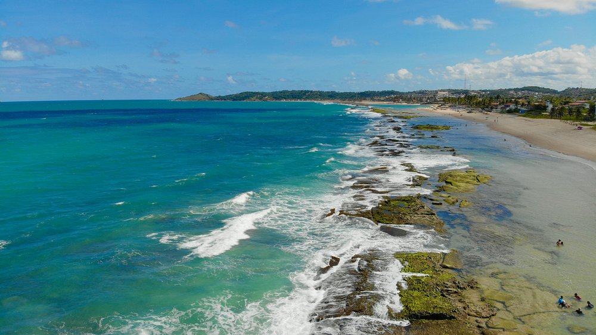

SOBRE O RESORT

Nosso Resort
Entre o verde do litoral pernambucano e as águas de Enseada dos Corais, o Resort Beira-Mar é um convite para desacelerar e aproveitar cada momento. O projeto combina descanso, conforto e lazer em um ambiente inspirado na natureza e na hospitalidade da região. A ideia é que cada hóspede encontre seu próprio jeito de aproveitar a estadia: relaxar à beira da piscina, curtir a praia, experimentar a gastronomia do resort ou participar das atividades de lazer. Das acomodações aos espaços de convivência, tudo foi pensado para receber famílias, casais e grupos de amigos com acolhimento e praticidade. Mais do que um lugar para se hospedar, o Resort Beira-Mar foi imaginado como um destino para criar boas lembranças — seja em uma viagem especial ou em alguns dias de descanso perto do mar.
Nossa História
O Resort Beira-Mar foi fundado em 18 de novembro de 2008 por Helena e Rafael Monteiro, um casal pernambucano apaixonado pelo litoral e pela hospitalidade. Durante uma viagem a Enseada dos Corais, eles imaginaram criar um refúgio onde visitantes pudessem aproveitar a beleza da região com conforto, tranquilidade e atividades para toda a família. O primeiro desenho do resort era simples: algumas acomodações, um restaurante acolhedor e espaços para descansar depois de um dia de praia. Helena cuidou da proposta de atendimento e da decoração; Rafael se dedicou à estrutura e às opções de lazer. Os dois queriam que o lugar tivesse uma identidade própria, inspirada no cenário que os havia encantado. Foi dessa inspiração que nasceu a logo do Beira-Mar. O sol representa novos começos, alegria e os dias ensolarados de Pernambuco; as ondas simbolizam o mar e a sensação de liberdade que acompanha uma estadia à beira da praia. A combinação dos dois elementos se tornou a marca do resort e resume o tipo de experiência que Helena e Rafael sonharam oferecer. Com o passar dos anos, o projeto cresceu e passou a incluir diferentes acomodações, gastronomia e atividades de lazer. Mesmo com as mudanças, a proposta dos fundadores permaneceu: receber cada hóspede com atenção e criar um ambiente onde famílias, casais e amigos possam aproveitar o tempo juntos. Hoje, o Resort Beira-Mar continua representando aquele sonho iniciado em Enseada dos Corais: um lugar para descansar, celebrar momentos especiais e levar consigo boas lembranças do litoral pernambucano.
